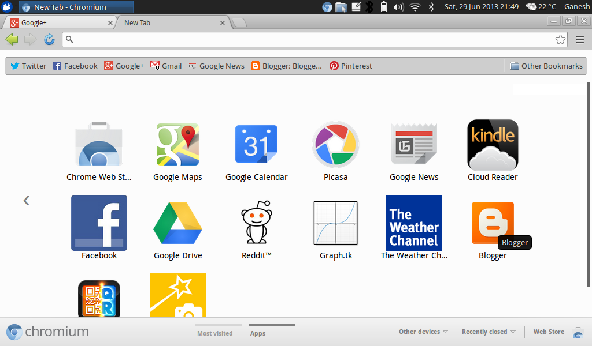
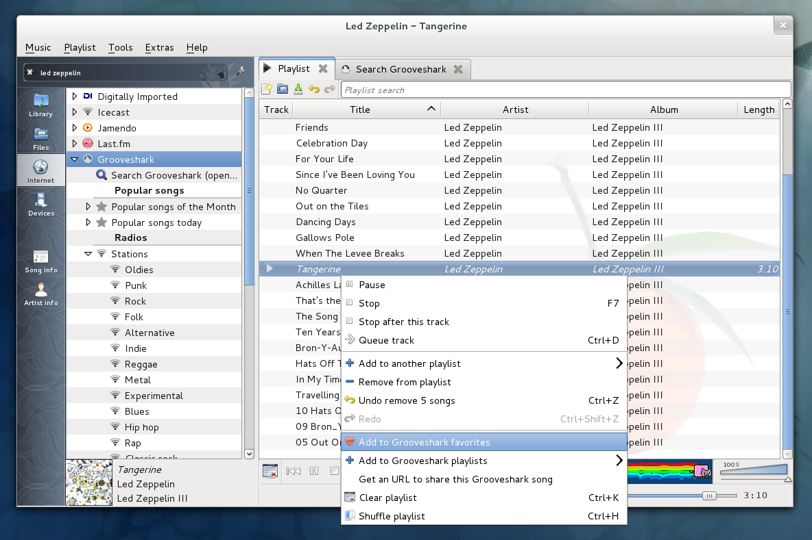
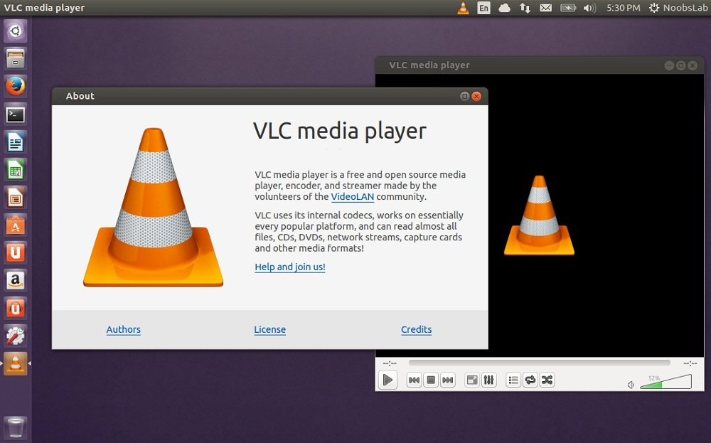

name: light layout: true class: center, middle, light --- #Software di uso quotidiano ##Corsi GNU-Linux 14/15 ###Edoardo Negri ```html edne@gmx.com ``` ###<img src="img/poul.logo.png" alt="POuL Logo" style="height: 4em; margin-top: 2em;"> --- layout:false template:light ##Dove trovate queste slides: ```html http://slides.edne.net/programmi ``` --- name: sign layout: true .sign[[Edoardo Negri](http://edne.net)] .course[Corsi GNU-Linux 14/15 - [POuL](https://poul.org)] --- name:argomenti .title[ ##Argomenti di oggi: ] -- .text[###Come installare i programmi] -- .text[###Applicazioni di uso comune] --- template:light layout:false ##Il Gestore Pacchetti --- template: sign layout: true --- name:pacchetti .title[ ##Pacchetti ] -- .text[###Sono degli archivi che contengono i programmi e i dati necessari all'installazione] -- .text[###Si *potrebbero* paragonare agli installer su Windows] -- .text[###Sulle distribuzioni basate su Debian (come Ubuntu) sono file con estensione *.deb*] --- name:dovesono .title[ ##Dove si trovano? ] -- .text[###Nei server di Ubuntu (o della vostra distribuzione)] -- .text[###Possono essere installati, aggiornati o rimossi dal **Gestore Pacchetti**] -- .text[###Se un programma non è presente nei repository di Ubuntu?] -- .text[####Si possono aggiungere sorgenti software non ufficiali] -- .text[####In Ubuntu si fa con i ppa] -- .text[###In casi estremi si può comunque scaricare e installare "a mano"] --- name:softwarecenter .title[##Ubuntu Software Center] .centered[###] --- name:synaptic .title[##Synaptic] .centered[###] --- name:apt-get .title[##apt-get] .centered[###<img src="img/apt-get.png" alt="apt-get">] --- template:light layout:false ##Programmi --- template: sign layout: true --- name:browser .title[ ##Browser ] -- .text_hidden[###Firefox .screenshot[]] -- .text_hidden[###Google Chrome .screenshot[]] -- .text_hidden[###Chromium .screenshot[]] --- name:antivirus .title[ ##Antivirus ] -- .no[#NO] --- name:office .title[ ##Office ] -- .text_hidden[###Libre Office .screenshot[]] -- .text_hidden[###Apache Open Office .screenshot[]] --- name:grafica .title[ ##Grafica ] -- .text_hidden[###Gimp .screenshot[]] -- .text_hidden[###Inkscape .screenshot[]] --- name:torrent .title[ ##Torrent ] -- .text_hidden[###Transmission .screenshot[]] -- .text_hidden[###qBittorrent .screenshot[]] --- name:chat .title[ ##Chat ] -- .text_hidden[###Pidgin .screenshot[]] -- .text_hidden[###Skype .screenshot[]] --- name:multimedia .title[ ##Multimedia ] -- .text_hidden[###Clementine .screenshot[]] -- .text_hidden[###Rythmbox .screenshot[]] -- .text_hidden[###Totem .screenshot[]] -- .text_hidden[###Vlc .screenshot[]] --- name:masterizzazione .title[ ##Masterizzazione ] -- .text_hidden[###Brasero .screenshot[]] -- .text_hidden[###K3b .screenshot[]] --- name:cc template: light layout:false class: center ##Grazie per l'attenzione! ###<img src="img/ccbysa.png" alt="" style="width: 30%;"> ####Queste slides sono licenziate Creative Commons<br> Attribution-ShareAlike 3.0 Unported https://www.poul.org